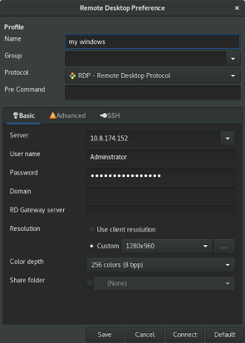

FAQ¶
This page contains common questions that may help you when using paws. Please check this page first to see if your question exists. If you are still unable to find a solution to your question, please send an email to the members on the contact page.
How can I see more logging messages?
Are there other ways to use Openstack credentials?
Can I use PAWS just to give me a Windows and how can I access it?
What Windows images are available in my Openstack provider?
Why do I get an exception after removing paws and reinstalling paws?
How can I reboot my Windows system?
Where can I find more PowerShell scripts?
Is there any difference between Windows to run in Openstack and DVD media installation for Windows?
Why Administrator account comes with no password?
Why I can’t use a small flavor to provision a Windows ?
How can I see more logging messages?¶
Add the -v argument to any paws task to view more logging messages.
# Replace task with one of the available tasks
paws <task> -v
Are there other ways to use Openstack credentials?¶
When paws is installed it will always look to use a credentials file stored within your supplied user directory. Paws would load your credentials and try to use them to authenticate using Keystone on Openstack side.
Another option is you can delete/rename this file and set your Openstack keystone credentials using system environment variables. Usually you can get them by accessing your Openstack by web browser and go to Access & Security tab and download openStack RC file.
Basically these are the variables needed:
'OS_AUTH_URL',
'OS_IDENTITY_API_VERSION',
'OS_TENANT_ID',
'OS_TENANT_NAME',
'OS_PROJECT_NAME',
'OS_USERNAME',
'OS_PASSWORD',
'OS_REGION_NAME'
Access your Openstack dashboard by browser and navigate to Access & Security tab. Click at API Access and click to Download Openstack RC File button.
[1] http://docs.openstack.org/cli-reference/common/cli-set-environment-variables-using-openstack-rc.html
Here is an example:
#!/bin/bash
export OS_AUTH_URL=http://10.10.10.10:5000/v2.0
export OS_IDENTITY_API_VERSION=3
# replace 123456 to your tenant id without double quotes
export OS_TENANT_ID=123456
export OS_TENANT_NAME="your tenant name"
export OS_PROJECT_NAME="your project name"
export OS_USERNAME="username"
export OS_PASSWORD="password"
export OS_REGION_NAME="regionOne"
if [ -z "$OS_REGION_NAME" ]; then unset OS_REGION_NAME; fi
- Save the content above to ~/openstack-creds.sh and update the variables to your current session.
- From terminal run the following commands.
$ source ~/openstack-creds.sh
$ env |grep OS_ |grep -v "PASSWORD"
3. DONE! You now have your Openstack credentials in your user env and is ready to run PAWS tasks if using Openstack as provider.
Can I use PAWS just to give me a Windows and how can I access it?¶
Yes! The idea about PAWS is much more than that but PAWS also can be used just to provision one or many Windows. Then you can access it by RDP protocol. More details can be found at guide section to provision or execute some commands in your Windows environment.
To access the machine we recommend to use Remmina as remote desktop client. This comes default in Fedora repo.
$ dnf provides remmina
remmina-1.2.0-0.13.rcgit.7.fc24.x86_64 : Remote Desktop Client
Repo : fedora
1. Assuming you have PAWS installed and credentials.yaml and resources.yaml files, open a terminal and run:
$ paws provision
Once provision is complete, a new file resources.paws will be stored at your user directory /home/$USER/paws.
$ cat /home/$USER/paws/resources.paws
resources:
- name: windows_2012_server
public_v4: 10.8.174.162
private_v4: 172.16.5.194
ssh_key_file: /home/user/.ssh/id_rsa
keypair: my_key_pair
id: 79f0dd24-28f0-45e1-b560-a299767fa969
win_password: my_password@2016
win_username: Administrator
2. Run remmina and add the information from your system provided as the image shows below. Use the values of win_username and win_password as the login credentials.
What Windows images are available in my Openstack provider?¶
You will need to have glance or nova clients installed in your machine. If not please follow steps in the following: http://docs.openstack.org/user-guide/common/cli-install-openstack-command-line-clients.html
From terminal run the following command.
$ glance image-list |grep -i win
Results for [1] Internal dev Openstack
| 84162b52-9d03-42db-a454-aa78b0628355 | win-2008r2sp1-serverstandard-x86_x64-latest |
| 73980dc1-bf77-47ad-867a-99dc0d598bec | win-2008r2sp1-serverstandard-x86_x64-released-pretest |
| 4ccc764b-164d-4108-8444-0246c41cc648 | win-2012-r2 |
| 8b2ff407-b7d3-441f-93b1-fbd300201f3e | win-7sp1-enterprise-x86_x64-latest |
| f83400cb-9c24-4fdb-aceb-90b1fd0cebb5 | win2012-ad-preconfigured-eval |
| 43860089-1bd0-4024-9ba3-9f64b2b86418 | Windows 10 Ent x64 |
| 5509a595-be50-454f-8782-534f38c02aa8 | Windows 7 Ent SP1 x64 |
| 13f19445-fda1-4c8e-ba96-9eacf1b2bfb0 | Windows 7 Pro SP1 x64 |
| 0314273e-28c0-4712-a1bc-b55415a7fe27 | Windows 8.1 Ent x64 |
| ce854f4f-b99f-404f-ab98-7a33f8af525d | Windows 8.1 Pro x64 |
| dafbc4c9-e489-41da-8e00-89044a5524af | Windows Server 2008 R2 Std SP1 x64 |
| 0d343fd6-d9a2-411d-b5b8-c1b15ef044f0 | Windows Server 2012 R2 Std Eval x64 |
| e59b2fa9-5ae4-46e4-bc06-8a70cd2c4104 | Windows Server 2016 Tech Prev |
| 568e95b9-fee1-48a9-b5f3-c2423170ab8e | Windows2012R2New |
Why do I get an exception after removing paws and reinstalling paws?¶
The following behavior is observed when running on a Fedora VM. If you remove paws and reinstall paws, you might find yourself seeing the following exception: ‘Inner Exception: Problem with auth parameters’. We are aware of this issue and working to provide a solution. Initial troubleshooting leads to be something around dnf removing all of paws dependencies when removing paws. Instead of just removing the paws package.
How can I reboot my Windows system?¶
You have different alternatives to perform a reboot on your Windows. If it is running as VM in a Openstack you can access your Openstack dashboard by browser and issue a soft Reboot. From terminal you can run the following also.
$ nova reboot 843c91ff-bb68-4cf9-85e0-8b98328c2c33
The ID above you can get from your resources.paws file. This will be stored in your user directory /home/$USER/paws. The reboot could take a few minutes to have your system back online (please be patient). Another alternative is to call paws to perform the reboot.
$ paws winsetup -ps powershell/reboot.ps1
The reboot.ps1 script will create a scheduled task in Windows to reboot the system in 10 seconds.
Where can I find more PowerShell scripts?¶
You should already be familiar with WS repository. If you are not please take a look there ws repo.
A good source for PowerShell scripts.
https://gallery.technet.microsoft.com/
https://msdn.microsoft.com/powershell/gallery/readme
https://msdn.microsoft.com/powershell/gallery/psgallery/psgallery_gettingstarted
Is there any difference between Windows to run in Openstack and DVD media installation for Windows?¶
The minimum required for openstack are cloudbase-init package. This provides necessary drivers as well as customization. Other pieces have been added to allow for access such as OpenSSH (and Cygwin) for SSH, automation such as PowerShell 4.0/WinRM for Ansible, and NFS/GIT for pulling files into the environment.
Why Administrator account comes with no password?¶
The default behavior of a fresh install of Windows is either to have a first-set Administrator password or Administrator account disabled. It is also best security practices to not have a common Administrator password. As Admin user is used as a user by CloudBase-init this has been continued.
Why I can’t use a small flavor to provision a Windows ?¶
Windows has minimum resource requirements which are much higher than Linux. Usually these requirements increase each release. For example the recommended requirements should be used as a minimum for any deployed Windows instance:
Windows Server 2012 R2 Hardware Requirements
| Component | Minimum Requirement | Microsoft Recommended |
| Processor | 1.4 GHz | 2 GHz or faster |
| Memory | 512 MB RAM | 2 GB RAM or greater |
| Available Disk space 40 GB or greater |